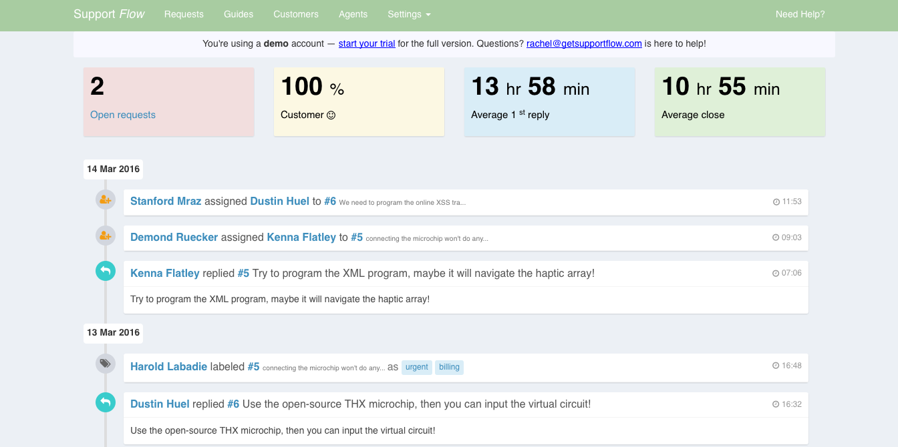
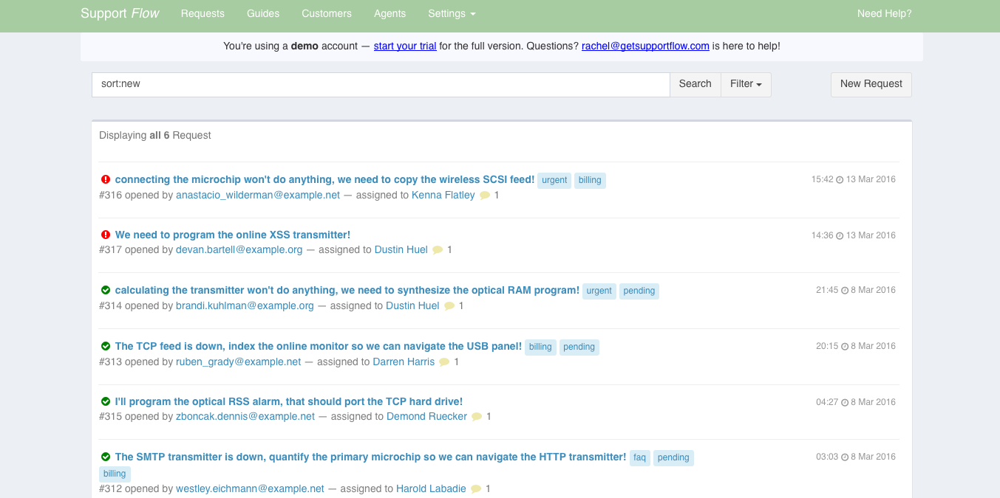
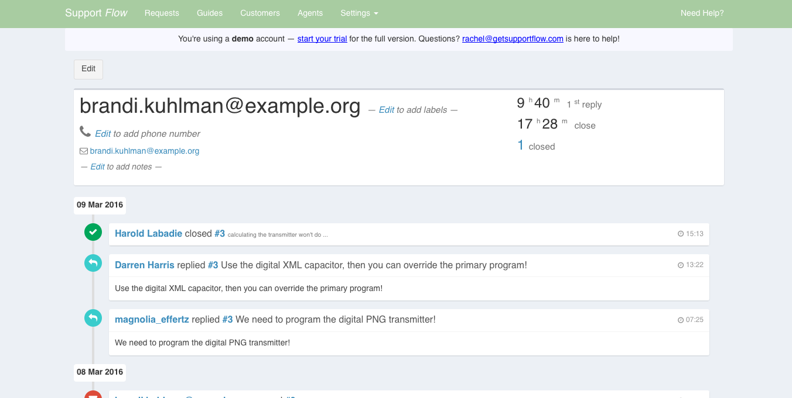
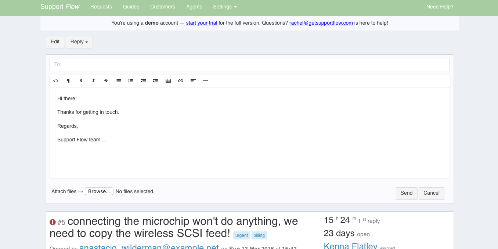
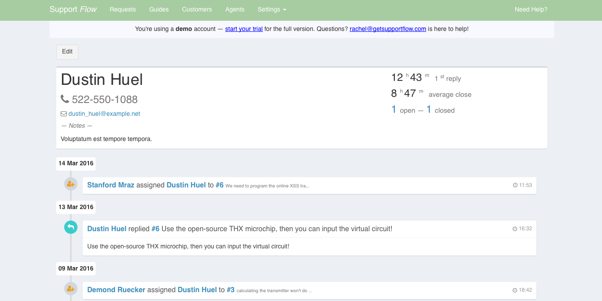
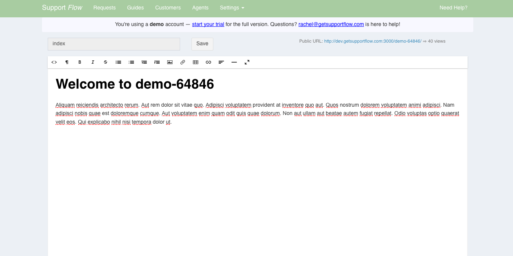
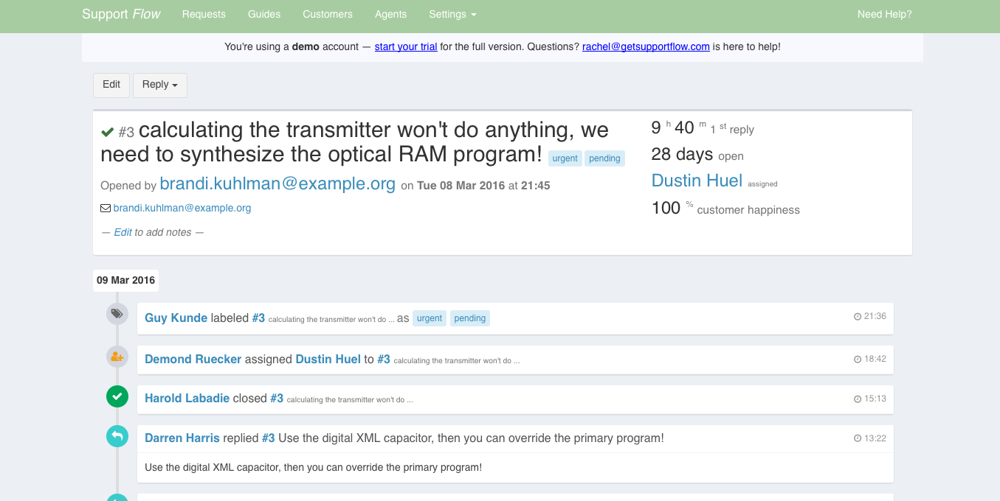

|
Dashboard  |
Full text search  |
|
Customer activity timeline & statistics  |
Canned email responses  |
|
Agent time line & statistics  |
Help desk guide WYSIWYG editor  |
|
Request time line & statistics  |
What is Support Flow?
An open source Ruby on Rails customer support application with a an elegant UI & codebase.
Features include
- Team activity stream
- Request activity time line
- Customisable canned responses
- Customer activity time line
- Agent activity time line
- Customer/Agent/Request/Team statistics
- Full text search
- Seamless email integration
- Email slash commands
The project goal is to spur customer support application innovation by providing clean code base that can be easily extended by developers.
Requirements
- Ruby 2.2
- Rails 4+
- Postgresql 9.3+
- ElasticSearch 1.7+
- Background queue
- Mandrill account
Installation
- git clone
- rake db:create
- rake db:migrate
- rake search:index
Configuration
- Setup up your Mandrill API key
-
Setup your background queue (or cronjob) to periodically re-index the search index
rake search:index - Create agents using fixtures or via email login
Licence
Support Flow Copyright (c) 2015-2016 Keith McDonnell.
Permission is hereby granted, free of charge, to any person obtaining a copy of this software and associated documentation files (the "Software"), to deal in the Software without restriction, including without limitation the rights to use, copy, modify, merge, publish, distribute, sublicense, and/or sell copies of the Software, and to permit persons to whom the Software is furnished to do so, subject to the following conditions:
The above copyright notice and this permission notice shall be included in all copies or substantial portions of the Software.
THE SOFTWARE IS PROVIDED "AS IS", WITHOUT WARRANTY OF ANY KIND, EXPRESS OR IMPLIED, INCLUDING BUT NOT LIMITED TO THE WARRANTIES OF MERCHANTABILITY, FITNESS FOR A PARTICULAR PURPOSE AND NONINFRINGEMENT. IN NO EVENT SHALL THE AUTHORS OR COPYRIGHT HOLDERS BE LIABLE FOR ANY CLAIM, DAMAGES OR OTHER LIABILITY, WHETHER IN AN ACTION OF CONTRACT, TORT OR OTHERWISE, ARISING FROM, OUT OF OR IN CONNECTION WITH THE SOFTWARE OR THE USE OR OTHER DEALINGS IN THE SOFTWARE.